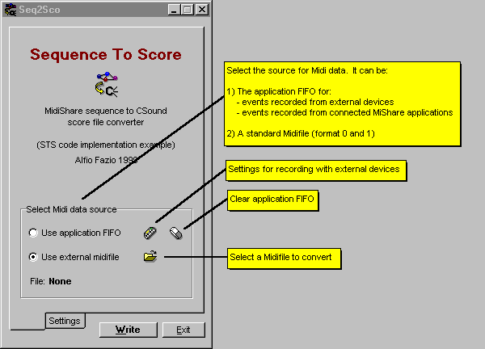
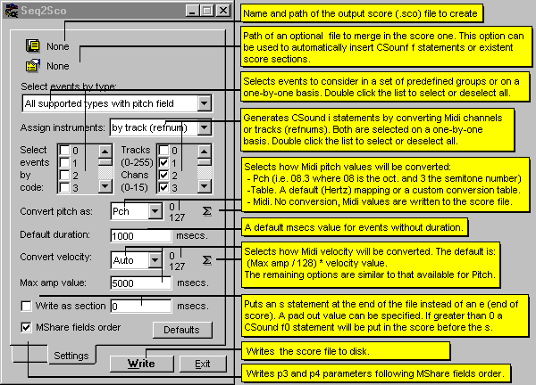

Application notes
Sequence To Score (Seq2Sco. exe) is a small Windows 32 application that converts MidiShare sequences to standard CSound score files (.sco). It is mainly intended as an implementation example of the STS code. This portable code is included in the distribution package and can be freely modified (LGPL Licence) to build similar applications running on others OS and/or to extend its set of features.
In spite of its example status, Seq2Sco is fully functional and can be used by Windows32 MidiShare users as a normal client application. The following graphics and related notes briefly illustrate the program usage. If you are interested in developing applications using STS, read the source code notes.


Custom tables (for pitch or amplitude) and addin files can be easily created with a standard text editor able to save as plain text.
In a table file, every line of text represents an entry in the conversion table. Comments or empty lines (i.e. values that you don't want to assign) can be inserted using the CSound comment symbol " ; ". For instance, in the following fragment of a pitch-table file:
8.020; comment
;
;comment
9.500 ;comment
the Midi notes in the sequence to convert corresponding to the line numbers of the file (i.e. 0, 1, 2, 3 if the above 4 lines are the firsts in the table file) will be converted that way:
| Midi note value | After conversion |
| 0 | 8.020 |
| 1 | mapped to that of the default Hertz table |
| 2 | mapped to that of the default Hertz table |
| 3 | 9.500 |
This means that lines can contain comments and that they will be ignored if starting with a comment symbol. To avoid the need to build text files with 128 lines every time a table is required, an offset can be specified both for start and end (default is 0 - 127). So, for instance, a text file with only 12 lines can be used to map pitches between C3 and C4 if a start offset of 60 is specified. The same for amplitudes.
Alfio Fazio 1999